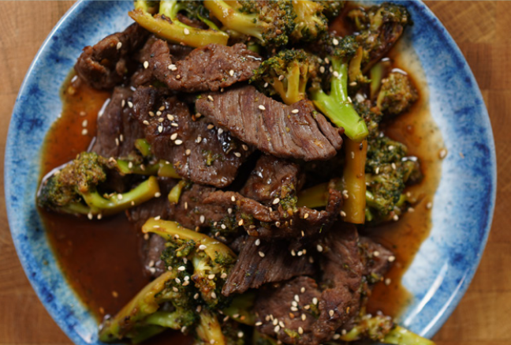

Home
Relax, be content and be grateful for today
Beef & Broccoli

Ingredients for 1 serving
200g lean cut beef (sirloin)
1 piece of fresh ginger (thumb
size)
Sauce:
Directions:
Start with the washing and marinating first if you choose to
do it (go to the chapter “Washing and Marinating Meat to
Tenderize”). Otherwise, just cut the meat into strips.
Chop up the broccoli florets and cut them into equal
bitesize pieces.
Peel and grate garlic and ginger.
Add all sauce ingredients to a glass and mix until
combined.
Prepare a small glass with 50g water, add 2g of
cornstarch, and mix, so there are no clumps.
Add broccoli to a pan (24cm/9,5inch) and cover with cold
water until submerged. Cook the broccoli florets on a stove
on medium-high for 2-3 minutes to get them soft.
Rinse the broccoli and wipe the pan with a paper towel and
add in the beef. If you don’t marinate the beef, you need to
add a bit of oil to the pan.
Fry the beef for 1 minute on each side so it gets color.
Remove the beef, add oil to the pan and fry the broccoli for
1-2 min, so they have a crunchy exterior with a soft interior
Add back the beef and the grated garlic and ginger.
Fry them for 20 seconds.
Add soy sauce and half of the cornstarch slurry and let it
simmer until thick, around 1 minute. Add more slurry if the
sauce is too thin. Done!
Macros: